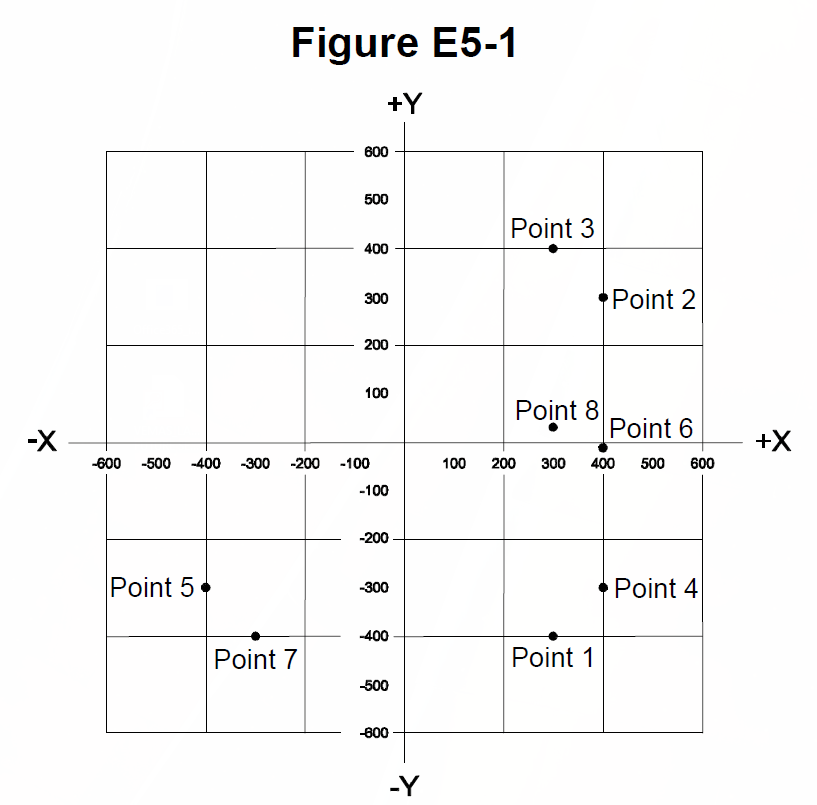

All 49 Ham Radio Amateur Extra questions for E5 Electrical Principles with the correct answers marked, from the official 2024-2028 question pool. Test yourself with the free practice exam.
E5A01
What can cause the voltage across reactances in a series RLC circuit to be higher than the voltage applied to the entire circuit?
A. Resonance ✓
B. Capacitance
C. Low quality factor (Q)
D. Resistance
E5A02
What is the resonant frequency of an RLC circuit if R is 22 ohms, L is 50 microhenries, and C is 40 picofarads?
A. 44.72 MHz
B. 22.36 MHz
C. 3.56 MHz ✓
D. 1.78 MHz
E5A03
What is the magnitude of the impedance of a series RLC circuit at resonance?
A. High, compared to the circuit resistance
B. Approximately equal to capacitive reactance
C. Approximately equal to inductive reactance
D. Approximately equal to circuit resistance ✓
E5A04
What is the magnitude of the impedance of a parallel RLC circuit at resonance?
A. Approximately equal to circuit resistance ✓
B. Approximately equal to inductive reactance
C. Low compared to the circuit resistance
D. High compared to the circuit resistance
E5A05
What is the result of increasing the Q of an impedance-matching circuit?
A. Matching bandwidth is decreased ✓
B. Matching bandwidth is increased
C. Losses increase
D. Harmonics increase
E5A06
What is the magnitude of the circulating current within the components of a parallel LC circuit at resonance?
A. It is at a minimum
B. It is at a maximum ✓
C. It equals 1 divided by the quantity 2 times pi, times the square root of (inductance L multiplied by capacitance C)
D. It equals 2 times pi, times the square root of (inductance L multiplied by capacitance C)
E5A07
What is the magnitude of the current at the input of a parallel RLC circuit at resonance?
A. Minimum ✓
B. Maximum
C. R/L
D. L/R
E5A08
What is the phase relationship between the current through and the voltage across a series resonant circuit at resonance?
A. The voltage leads the current by 90 degrees
B. The current leads the voltage by 90 degrees
C. The voltage and current are in phase ✓
D. The voltage and current are 180 degrees out of phase
E5A09
How is the Q of an RLC parallel resonant circuit calculated?
A. Reactance of either the inductance or capacitance divided by the resistance
B. Reactance of either the inductance or capacitance multiplied by the resistance
C. Resistance divided by the reactance of either the inductance or capacitance ✓
D. Reactance of the inductance multiplied by the reactance of the capacitance
E5A10
What is the resonant frequency of an RLC circuit if R is 33 ohms, L is 50 microhenries, and C is 10 picofarads?
A. 7.12 MHz ✓
B. 23.5 kHz
C. 7.12 kHz
D. 23.5 MHz
E5A11
What is the half-power bandwidth of a resonant circuit that has a resonant frequency of 7.1 MHz and a Q of 150?
A. 157.8 Hz
B. 315.6 Hz
C. 47.3 kHz ✓
D. 23.67 kHz
E5A12
What is the half-power bandwidth of a resonant circuit that has a resonant frequency of 3.7 MHz and a Q of 118?
A. 436.6 kHz
B. 218.3 kHz
C. 31.4 kHz ✓
D. 15.7 kHz
E5A13
What is an effect of increasing Q in a series resonant circuit?
A. Fewer components are needed for the same performance
B. Parasitic effects are minimized
C. Internal voltages increase ✓
D. Phase shift can become uncontrolled
E5B01
What is the term for the time required for the capacitor in an RC circuit to be charged to 63.2% of the applied voltage or to discharge to 36.8% of its initial voltage?
A. An exponential rate of one
B. One time constant ✓
C. One exponential period
D. A time factor of one
E5B02
What letter is commonly used to represent susceptance?
A. G
B. X
C. Y
D. B ✓
E5B03
How is impedance in polar form converted to an equivalent admittance?
A. Take the reciprocal of the angle and change the sign of the magnitude
B. Take the reciprocal of the magnitude and change the sign of the angle ✓
C. Take the square root of the magnitude and add 180 degrees to the angle
D. Square the magnitude and subtract 90 degrees from the angle
E5B04
What is the time constant of a circuit having two 220-microfarad capacitors and two 1-megohm resistors, all in parallel?
A. 55 seconds
B. 110 seconds
C. 440 seconds
D. 220 seconds ✓
E5B05
What is the effect on the magnitude of pure reactance when it is converted to susceptance?
A. It is unchanged
B. The sign is reversed
C. It is shifted by 90 degrees
D. It is replaced by its reciprocal ✓
E5B06
What is susceptance?
A. The magnetic impedance of a circuit
B. The ratio of magnetic field to electric field
C. The imaginary part of admittance ✓
D. A measure of the efficiency of a transformer
E5B07
What is the phase angle between the voltage across and the current through a series RLC circuit if XC is 500 ohms, R is 1 kilohm, and XL is 250 ohms?
A. 68.2 degrees with the voltage leading the current
B. 14.0 degrees with the voltage leading the current
C. 14.0 degrees with the voltage lagging the current ✓
D. 68.2 degrees with the voltage lagging the current
E5B08
What is the phase angle between the voltage across and the current through a series RLC circuit if XC is 300 ohms, R is 100 ohms, and XL is 100 ohms?
A. 63 degrees with the voltage lagging the current ✓
B. 63 degrees with the voltage leading the current
C. 27 degrees with the voltage leading the current
D. 27 degrees with the voltage lagging the current
E5B09
What is the relationship between the AC current through a capacitor and the voltage across a capacitor?
A. Voltage and current are in phase
B. Voltage and current are 180 degrees out of phase
C. Voltage leads current by 90 degrees
D. Current leads voltage by 90 degrees ✓
E5B10
What is the relationship between the AC current through an inductor and the voltage across an inductor?
A. Voltage leads current by 90 degrees ✓
B. Current leads voltage by 90 degrees
C. Voltage and current are 180 degrees out of phase
D. Voltage and current are in phase
E5B11
What is the phase angle between the voltage across and the current through a series RLC circuit if XC is 25 ohms, R is 100 ohms, and XL is 75 ohms?
A. 27 degrees with the voltage lagging the current
B. 27 degrees with the voltage leading the current ✓
C. 63 degrees with the voltage lagging the current
D. 63 degrees with the voltage leading the current
E5B12
What is admittance?
A. The inverse of impedance ✓
B. The term for the gain of a field effect transistor
C. The inverse of reactance
D. The term for the on-impedance of a field effect transistor
E5C01
Which of the following represents pure capacitive reactance of 100 ohms in rectangular notation?
A. 0 - j100 ✓
B. 0 + j100
C. 100 - j0
D. 100 + j0
E5C02
How are impedances described in polar coordinates?
A. By X and R values
B. By real and imaginary parts
C. By magnitude and phase angle ✓
D. By Y and G values
E5C03
Which of the following represents a pure inductive reactance in polar coordinates?
A. A positive 45 degree phase angle
B. A negative 45 degree phase angle
C. A positive 90 degree phase angle ✓
D. A negative 90 degree phase angle
E5C04
What type of Y-axis scale is most often used for graphs of circuit frequency response?
A. Linear
B. Scatter
C. Random
D. Logarithmic ✓
E5C05
What kind of diagram is used to show the phase relationship between impedances at a given frequency?
A. Venn diagram
B. Near field diagram
C. Phasor diagram ✓
D. Far field diagram
E5C06
What does the impedance 50 - j25 ohms represent?
A. 50 ohms resistance in series with 25 ohms inductive reactance
B. 50 ohms resistance in series with 25 ohms capacitive reactance ✓
C. 25 ohms resistance in series with 50 ohms inductive reactance
D. 25 ohms resistance in series with 50 ohms capacitive reactance
E5C07
Where is the impedance of a pure resistance plotted on rectangular coordinates?
A. On the vertical axis
B. On a line through the origin, slanted at 45 degrees
C. On a horizontal line, offset vertically above the horizontal axis
D. On the horizontal axis ✓
E5C08
What coordinate system is often used to display the phase angle of a circuit containing resistance, inductive, and/or capacitive reactance?
A. Maidenhead grid
B. Faraday grid
C. Elliptical coordinates
D. Polar coordinates ✓
E5C09
When using rectangular coordinates to graph the impedance of a circuit, what do the axes represent?
A. The X axis represents the resistive component, and the Y axis represents the reactive component ✓
B. The X axis represents the reactive component, and the Y axis represents the resistive component
C. The X axis represents the phase angle, and the Y axis represents the magnitude
D. The X axis represents the magnitude, and the Y axis represents the phase angle
E5C10
Which point on Figure E5-1 best represents the impedance of a series circuit consisting of a 400-ohm resistor and a 38-picofarad capacitor at 14 MHz?

A. Point 2
B. Point 4 ✓
C. Point 5
D. Point 6
E5C11
Which point in Figure E5-1 best represents the impedance of a series circuit consisting of a 300-ohm resistor and an 18-microhenry inductor at 3.505 MHz?
A. Point 1
B. Point 3 ✓
C. Point 7
D. Point 8
E5C12
Which point on Figure E5-1 best represents the impedance of a series circuit consisting of a 300-ohm resistor and a 19-picofarad capacitor at 21.200 MHz?
A. Point 1 ✓
B. Point 3
C. Point 7
D. Point 8
E5D01
What is the result of conductor skin effect?
A. Resistance increases as frequency increases because RF current flows closer to the surface ✓
B. Resistance decreases as frequency increases because electron mobility increases
C. Resistance increases as temperature increases because of the change in thermal coefficient
D. Resistance decreases as temperature increases because of the change in thermal coefficient
E5D02
Why is it important to keep lead lengths short for components used in circuits for VHF and above?
A. To increase the thermal time constant
B. To minimize inductive reactance ✓
C. To maintain component lifetime
D. All these choices are correct
E5D03
What is the phase relationship between current and voltage for reactive power?
A. They are out of phase
B. They are in phase
C. They are 90 degrees out of phase ✓
D. They are 45 degrees out of phase
E5D04
Why are short connections used at microwave frequencies?
A. To increase neutralizing resistance
B. To reduce phase shift along the connection ✓
C. To increase compensating capacitance
D. To reduce noise figure
E5D05
What parasitic characteristic causes electrolytic capacitors to be unsuitable for use at RF?
A. Skin effect
B. Shunt capacitance
C. Inductance ✓
D. Dielectric leakage
E5D06
What parasitic characteristic creates an inductor’s self-resonance?
A. Skin effect
B. Dielectric loss
C. Coupling
D. Inter-turn capacitance ✓
E5D07
What combines to create the self-resonance of a component?
A. The component’s resistance and reactance
B. The component’s nominal and parasitic reactance ✓
C. The component’s inductance and capacitance
D. The component’s electrical length and impedance
E5D08
What is the primary cause of loss in film capacitors at RF?
A. Inductance
B. Dielectric loss
C. Self-discharge
D. Skin effect ✓
E5D09
What happens to reactive power in ideal inductors and capacitors?
A. It is dissipated as heat in the circuit
B. Energy is stored in magnetic or electric fields, but power is not dissipated ✓
C. It is canceled by Coulomb forces in the capacitor and inductor
D. It is dissipated in the formation of inductive and capacitive fields
E5D10
As a conductor’s diameter increases, what is the effect on its electrical length?
A. Thickness has no effect on electrical length
B. It varies randomly
C. It decreases
D. It increases ✓
E5D11
How much real power is consumed in a circuit consisting of a 100-ohm resistor in series with a 100-ohm inductive reactance drawing 1 ampere?
A. 70.7 watts
B. 100 watts ✓
C. 141.4 watts
D. 200 watts
E5D12
What is reactive power?
A. Power consumed in circuit Q
B. Power consumed by an inductor’s wire resistance
C. The power consumed in inductors and capacitors
D. Wattless, nonproductive power ✓